번호를 누르면 해당 작품 설명으로 이동합니다. ※ 12 듀킴과 13 최선의 자리가 설치 과정에서 서로 바뀌었습니다. 인쇄된 리플렛의 도면과 다르니 이 도면을 참고해 주세요.
01
최고은
〈나는 전기양의 꿈을 꾸는가?〉
2026 · 시트지와 천에 디지털 프린트, 가변크기
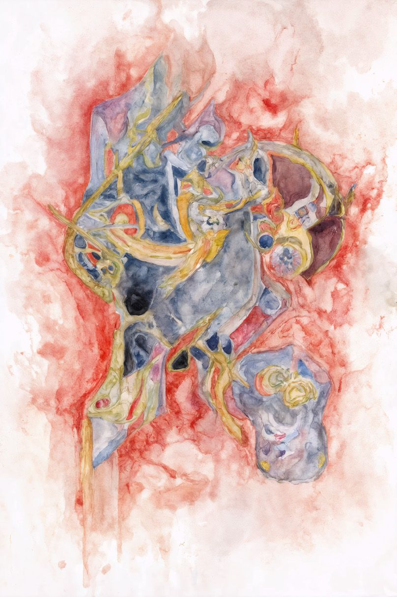
작가 화풍을 학습한 AI로 생성한 이미지
이 작업에서 작가는 자신의 화풍을 이미지 생성형 AI에 학습시키는 과정을 하나의 실험으로 제시한다. 이는 작가와 AI를 창작의 주체와 도구로 구분하기보다, 이미지가 생성되고 순환하는 과정에서 두 존재가 서로의 역할을 어떻게 갱신하는지를 탐색하는 시도이다. AI가 생산한 이미지는 원본과 복제, 창작과 학습의 경계를 흔들며 회화의 저자성과 창작 행위의 의미를 다시 질문한다. 나아가 작가는 여성성과 남성성을 동시에 투사받으면서도 본질적으로는 젠더를 갖지 않는 AI의 역설적 특성에 주목하며, 인간이 기술에 부여하는 정체성과 욕망의 구조를 드러낸다.
►최고은 Che Go Eun
최고은은 한국화를 전공한 후 유럽으로 근거지를 옮겨 지난 10년간 주로 디지털 이미지를 생산하는 작업을 해왔다. 작가는 디지털 콜라주, 3D 모델링, 로봇 드로잉, VR, AI 이미지 등 컴퓨터 기술과 전통 회화를 결합함으로써 페인터가 이미지 생성장치기술과 형성하는 일종의 존재론적 연결과 분절을 고민하여 회화의 확장 가능성을 실험한다. 사랑, 비디오 게임, 뷰티, 설화, 종교 속에 등장하는 여성 서사로부터 영감을 얻고, 이로부터 출발하여 다양한 이미지를 만들어내는 작업을 해나가는 중이다.
02
장영해
〈Grass, Oxygen, Light, Friends〉
2026 · 영상 설치
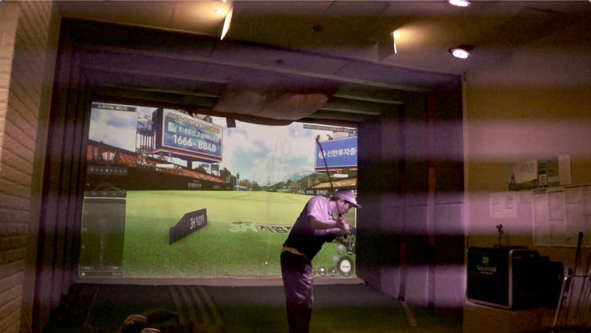
장영해의 작업은 스크린골프에서 광활한 초원의 이미지가 작은 실내 공간에 압축되어 구현되기 위해 필요한 물리적 조건들에 주목한다. 공간을 극단적으로 축소하는 과정에는 아주 짧은 순간을 포착하는 고속 촬영 기술과 시뮬레이션 시스템, 수만 번의 타격과 충격을 견디는 과정에서 발생하는 벽의 분진 등이 수반된다. 이처럼 가상의 3D 초원은 매끈한 이미지 이면에 물리적 충격과 마모의 흔적을 품고 있다.
이번 작업은 현재까지도 온전히 발굴·보존되지 않은 민간인 학살지 위에 조성된 골프장이 자리한 산을 조명한 싱글 채널 비디오 〈cobalt〉(2025)로부터 이어진다. 전작에서 탐구한 '땅이 겹치는 방식'이 이번에는 스크린골프장이라는 가상 공간으로 확장된다. 작가는 〈cobalt〉에 등장하는 경북 경산의 실제 골프장과 동일한 코스를 3D로 구현한 스크린골프 공간을 적외선 고속 촬영하며, 스크린골프장에서 생기는 분진으로 스크린을 만들어 물리적 타격과 충격이 가상의 풍경을 거쳐 엔터테인먼트로 전환되는 기술적 조건을 추적한다. 이러한 탐구에 한국 사회에서 골프가 지닌 특유의 계급성이 또 하나의 층위로 겹쳐지며, 기술과 자연, 레저와 폭력, 실재와 가상이 서로 얽히는 복합적인 지점을 드러낸다.
►장영해 Chang Younghae
장영해는 폭력과 욕망이 어떤 기술을 통해 변형되고 왜곡되는가 하는 구조에 관심을 두고, 영상, 퍼포먼스, 설치 등의 작업을 한다. 그에게 몸은 기술을 통해 변형되고 재구성 되는 대상으로 존재하고, AI, 카메라, X-ray와 같은 매체적 장치를 활용해 신체를 이미지로 변환하거나, 그것을 분절하고 사물화하는 과정을 주목한다.
03
주슬아
〈displace - - -〉
2026 · 혼합 매체, 가변설치
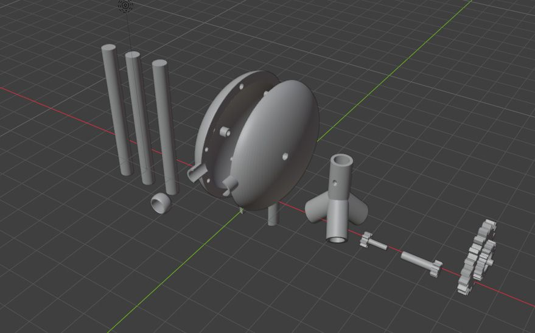
리서치는 장소를 읽기 위한 과정이지만, 하나의 장소는 과연 하나의 방식으로만 읽힐 수 있을까. 작가의 질문은 의미를 만들고 다시 미끄러지는 만담의 구조와 닮아 있다. 작업은 이 과정을 displace(전위)의 개념으로 이어간다. 현장에서 직접 걷고 수집한 경험과 인터넷에서 모은 경인선 철길 이미지는 같은 장소를 가리키지만 서로 다른 읽기를 만들어낸다. 화면 위의 이미지는 displacement 기능을 통해 시각 정보에서 높이값으로 이동하고, 3D 프린터의 적층 과정을 거쳐 다시 물질이 된다. 이 과정에서 철길은 더 이상 재현의 대상이 아니라, 장소를 읽는 방식이 다른 위치와 다른 물질로 계속 이동하는 과정으로 드러난다. 하나의 장소는 사진과 데이터, 계산된 표면, 적층된 물질 사이를 오가며 반복해서 읽히고, 그 읽기는 또 다른 추적을 만들어낸다.
►주슬아 Sla Joo
주슬아는 ‘분열’과 ‘변형’이라는 주제에 관심을 두고, 애니메이션과 문학에서 받은 영향을 작업으로 풀어낸다. 작가는 주로 몸을 변형하고 자아를 해체하며 새로운 정체성을 구축하는 이야기에 매료되어 왔다. 이러한 서사는 파편화된 자아와 혼란을 통해 현대 사회에서 개인의 정체성이 어떻게 균열되고 재구성되는지를 질문하게 한다. 주로 다양한 매체를 활용하여 매체 간의 전이를 실험하고, 이 과정에서 의도적 오류를 만들어낸다. 이를 통해 정체성의 붕괴와 재구성 과정에서 발생하는 공포와 변형을 시각적으로 탐구하며, 새로운 형태의 서사를 발생시킨다.
04
조영각
〈아무도 가지지 못한 것들(無主之物)〉
2026 · 타공 철판 악보, 로봇 광센서 연주 시스템, 모스부호 기반 사운드(DAWLESS 하드웨어), 필드 레코딩, 가변설치
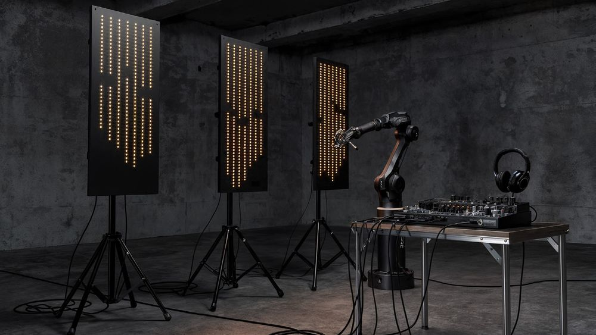
〈아무도 가지지 못한 것들(無主之物)〉은 제조업 생태계가 빠져나간 청계천, 문래, 성수의 지역 데이터를 세 편의 음악으로 작곡하고, 각 곡이 모스부호로 숨긴 문장을 철판에 타공한 라이팅 악보 3점과 이를 빛 감지 센서로 해독하여 DAWLESS 장비로 연주하는 로봇, 그리고 세 지역에서 채집한 필드 레코딩으로 구성한 미디어 설치다. 도시의 소음은 잔존의 배경이 되고 모스 신호는 소실의 리듬이 되며, 문장은 어디에도 문자로 표기되지 않은 채 빛의 간격으로만 존재한다.
►조영각 Youngkak Cho
조영각은 미디어 아트, 인공지능, 디자인을 가로지르며 활동하는 작가다. 지난 10여 년에 걸쳐 인공지능을 작업의 도구가 아니라 조건으로 다루는 방법을 탐구해 왔으며, 최근에는 생성 중심의 작업에서 인공지능의 인프라적 조건 자체를 주제로 삼는 방향으로 작업을 이동시키고 있다.
〈나의 우육면 다이어리〉와 〈우육면 트위스트〉는 통조림을 하나의 지도 삼아 최가영이 한국, 일본, 대만을 횡단하며 수행한 리서치를 따라가는 게임과 영상 작업이다. 작가에게 통조림은 둥글게 말린 지도로서, 서로 멀리 떨어진 장소와 시간을 맞닿게 하는 상징적 매개체이자 이동하는 아카이브이다. 보다 먼 곳으로 운반하기 위해 제작된 소고기 통조림은 한국에서는 나주곰탕을, 대만에서는 우육면을 탄생시키며 서로 다른 음식 문화와 역사를 연결한다. 이러한 이동의 경로는 대만 가오슝을 한국 인천과 일본 시모노세키로, 한국 나주를 대만 신베이·윈린과 일본 교토로 이어지는 또 다른 지리적 관계망으로 확장된다. 식민주의와 냉전을 직접 경험하지 않은 세대인 작가는 이러한 여정을 통해 백여 년 전의 역사와 오늘의 재난을 함께 응시한다. 결국 아주 먼 곳을 향했던 시선은 둥글게 말려 다시 현재로 돌아오고, 지금 이곳을 살아가는 우리의 삶을 새롭게 바라보게 한다.
►최가영 Kayoung Choi
최가영은 지금 이곳에 실재하는 대상을 단서 삼아, 경험해본 적 없는 시간과 장소에 관한 기억과 상상을 추적한다. 대상을 수집하고, 본래 놓여 있던 자리를 찾아가고, 그에 얽힌 역사와 개인의 기억을 좇아 이동한다. 멀리 떨어진 좌표에 자신을 위치시키고 다시 이쪽을 바라보는 이 현장 리서치는, 서로 맞붙을 수 없던 시공간의 지도를 접고 말아서 새로운 궤적을 그린다. 타인과 자신, 과거와 현재 사이에 비례식을 세우며, 지금의 우리를 향한 질문을 회화·영상·설치·퍼포먼스로 표현한다.
06
김시흔
〈호흡하는 잔여들: 합성 생태의 규칙들〉
2026 · 공압장치 기반 키네틱 조형과 영상이 결합된 복합 미디어 장치, 가변설치
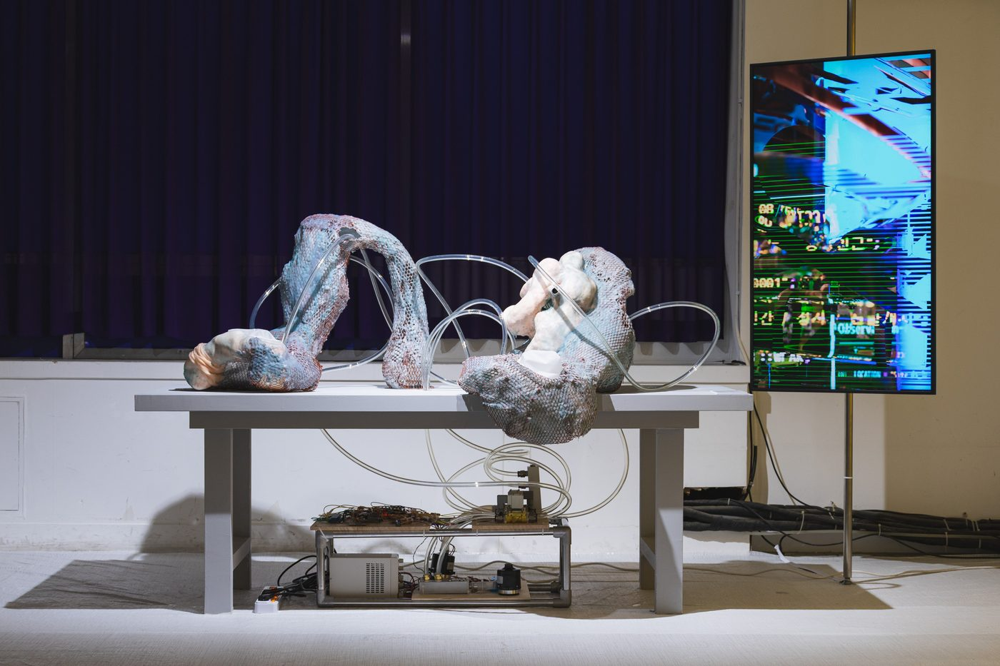
〈호흡하는 잔여들〉은 게임 엔진 속 합성 생태계의 디지털 시간을 공압 장치로 작동하는 호흡의 물리적 시간으로 번역하는 영상–조형 복합 장치(Dispositif)다. 영상(Part A) 속 세계에는 잠복하고 번지는 미시생물, 산업 리듬에 종속된 인간-기계 혼종체, 그리고 이들의 세계를 측정, 분류, 통제하려는 기술적 관찰 체계가 존재한다. 영상 속 인간-기계 혼종체는 노동의 피로와 철의 녹슮의 시간을, 미시생물은 습한 틈에서 번지는 시간을 품은 타자이다. 이들은 합성 생태 시스템 안에서 서로의 표면에 시간을 남기는 방식으로 얽혀 있고, 관찰-통제 시스템은 이들을 분류-계측하려 하지만 끝내 실패한다. 영상과 연동하는 공압시스템 기반의 조형장치(Part B)는 관객의 접근을 센서로 감지하며, 지연과 오차를 거쳐 영상 변화와 공압의 느린 호흡으로 번역된다. 작품은 영상의 생태 상태와 관객의 체류를 지연-중첩한 뒤 조형의 느린 팽창과 불완전한 수축으로 옮긴다. 관객은 디지털 세계와 물리적 몸 사이의 번역이 어긋나고 잔여를 남기는 접촉지대에 머무는 존재가 된다.
►김시흔 Siheun Kim
김시흔은 타자화된 몸과 액체적 매개체의 조형 언어를 바탕으로, 기술이 세계를 감지하고 번역하는 동시대의 조건을 탐구한다. 실제 장소 리서치를 통하여 생태적, 역사적 흔적을 수집하고 게임엔진 기반 영상, 3D 프린팅, 센서와 키네틱 시스템을 통하여 재구성한다. 작가는 이러한 요소들이 결합된 영상-조형 복합 장치인 Dispositif 를 통하여 몸과 장소, 비인간의 시간이 하나의 이미지나 정보로 완전히 환원되지 않고 남는 상태를 감각화한다.
07
권희수
〈오렌지 방〉
2026 · 렌티큘러 라이트박스, 빈티지 액자 속 사진, 작가의 집에서 가져온 커튼과 옷걸이, 액자 속 타자 원고, 가변설치
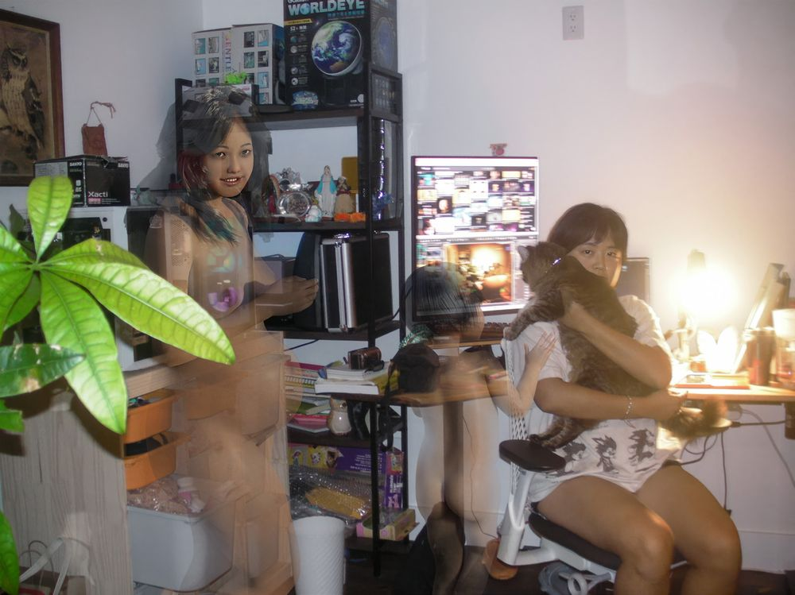
〈오렌지 방〉은 2026년 권희수가 로스앤젤레스로 이주하며 마련한 작업실에서 진행된 첫 명상적 유도 시각화 세션에서 시작되었다. 오렌지빛으로 방을 축복하는 의식을 계기로, 작가는 방과 자궁, 아카이브가 하나의 구조로 겹쳐지는 것을 발견했다. 렌티큘러 라이트박스와 빈티지 프레임 속 사진, 작가의 집에서 가져온 커튼과 옷걸이, 타자로 친 원고가 서로 다른 시간대의 이미지를 오렌지빛이라는 감각적 신호로 연결하며, 개인의 기억을 현재진행형으로 기록하는 살아있는 아카이브의 첫 페이지를 이룬다.
►권희수 Heesoo Kwon
권희수는 자신과 가족의 삶, 여성 계보, 한국 신화를 바탕으로 의례적이고 자기민족지적인 아카이브 작업 레이무숨을 이어가고 있다. 디지털 기술을 도구 삼아 조상의 기억을 따라가며 가부장적 서사를 낯설게 재해석한다. 2017년 시작된 이 프로젝트는 아날로그와 디지털 매체를 결합한 3D 애니메이션과 사진 아카이브로, 작가가 창안한 '자전적 페미니즘 종교'의 신전이자 여성 조상들이 공존하는 유토피아를 그린다.
08
장종완
〈오메가 포인트〉 · 〈킬리만자로의 선물〉
〈오메가 포인트〉 2023 · 〈킬리만자로의 선물〉 2024 린넨에 아크릴릭 과슈, 안료, 각 227.3 × 181.8 cm
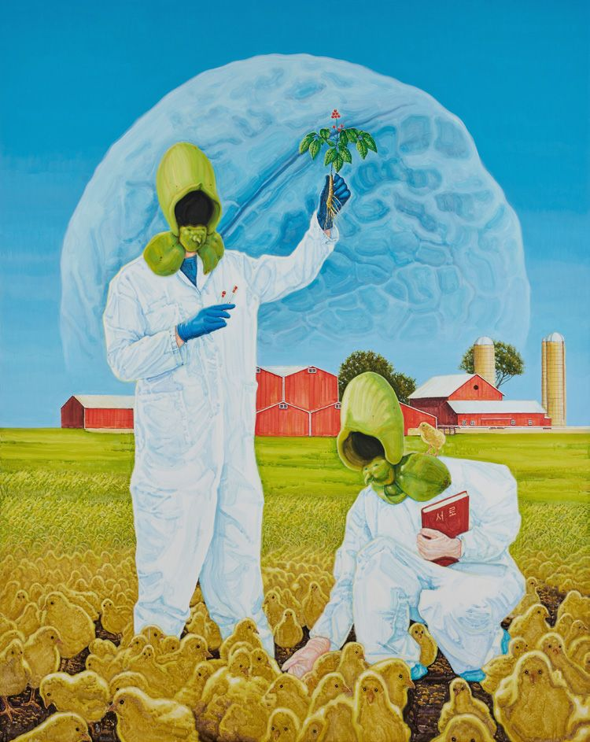
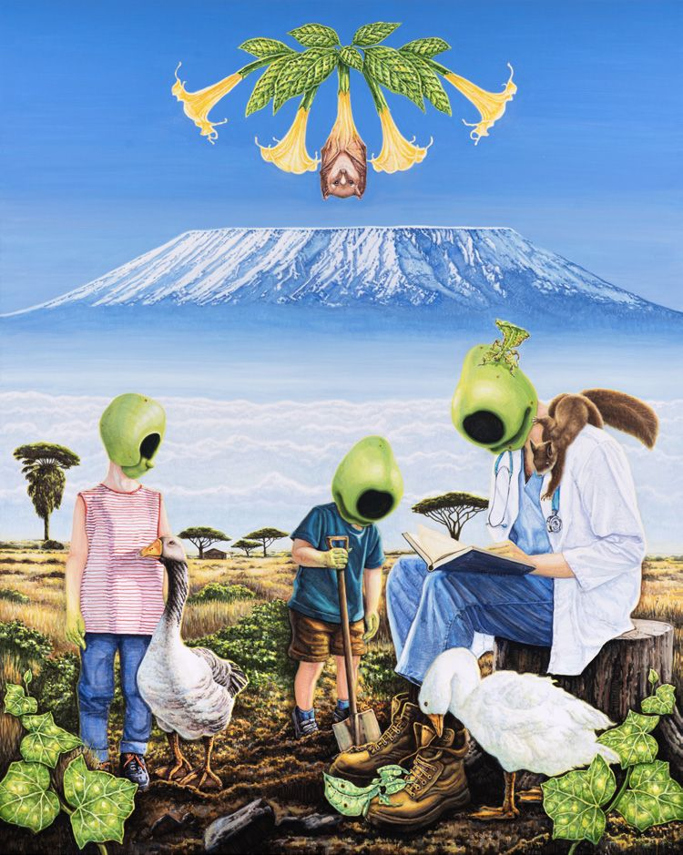
이미지 제공: 파운드리 서울
〈오메가 포인트〉와 〈킬리만자로의 선물〉은 2023년 개인전 《골디락스 존》에서 선보인 대형 회화 연작의 일부로, 농업과 식물을 주요 모티프로 삼아 장종완 특유의 초현실적 풍경을 펼쳐 보인다. 대규모로 개간된 기하학적 농경지와 개량된 식물 및 가축 등 인간의 필요에 의해 재편된 자연은 작가에게 SF적 상상력을 불러일으키는 풍경으로 다가왔으며, 이는 작업의 핵심 모티프로 이어졌다. 이러한 현실의 풍경을 재조합한 화면은 미래의 새로운 정착지에 대한 상상으로 확장된다. 이번 출품작 역시 이러한 탐구의 연장선에 있으며, 종교화와 프로파간다 이미지에 등장하는 선지자와 지도자의 도상을 차용해 기술의 발전을 통해 신의 영역에 도달하고자 하는 인간의 욕망을 드러낸다.
►장종완 Jongwan Jang
장종완은 이기적인 합리성을 강조하는 인간 중심의 사회와 현대 인류의 끝없는 불안함을 특유의 따뜻하지만, 냉소적인 시각으로 그려내고 있다. 고전적인 방식으로 그려진 그의 회화는 표면 위를 가로지르는 작가의 현대사회에 대한 시각과 뒤섞여 펼쳐진다. 아이러니한 풍경은 동물 가죽 뒷면에 그려짐으로써 그 키치함이 극대화되는데, 그가 그려낸 화면 속 세상에는 구원에 대한 인간의 바람, 외면당한 자연과 동물, 맹목적이며 광기 어린 믿음이 뒤섞여있다.
09
정혜정, 사이언스(황준규)
〈바이오 오디세이: 유령효모를 찾아서〉 · 〈부풀어 오르는〉
〈바이오 오디세이: 유령효모를 찾아서〉 2026 · 디지털 애니메이션, FHD, 컬러, 3분 10초 〈부풀어 오르는〉 2026 · 효모가 부풀린 풍선에 은박 테이프, 가변크기 〈바이오 오디세이: 유령효모를 찾아서〉 워크숍 참여 청소년 15명과 공동 제작
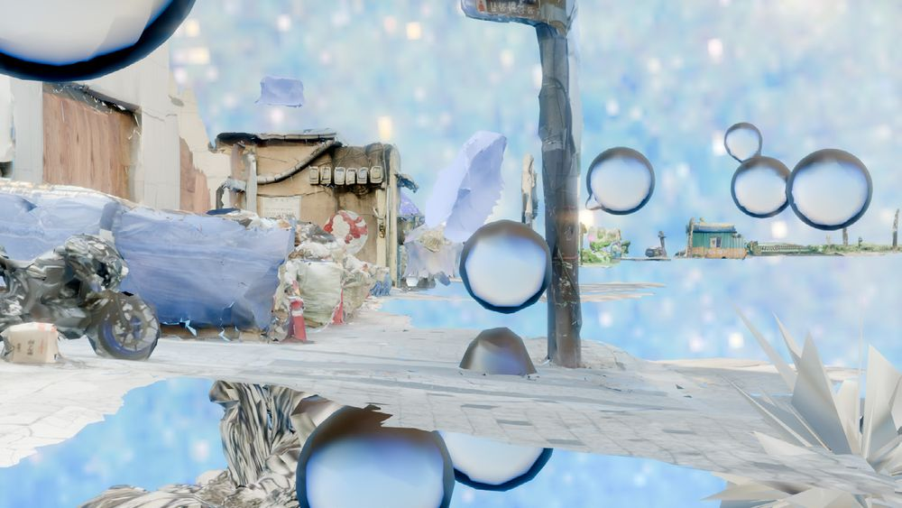
영등포문화재단과 종근당고촌재단이 함께한 워크숍 〈바이오 오디세이: 유령효모를 찾아서〉는 초등학교 5학년부터 중학교 1학년까지의 청소년 15명과 사이언스(황준규), 정혜정 작가가 함께 영등포의 공기 속 효모를 채집하고 관찰하여 키네틱 조각과 캐릭터, 애니메이션으로 구현한 공동 창작 프로젝트다.
정혜정과 사이언스(황준규)는 청소년 15명이 참여한 바이오 워크숍을 기획하고 이끌었다. 정혜정은 3D 애니메이션, 영상, 설치를 주요 매체로 작업하며, 자연·문화·기술·물질 사이를 가로지르는 인간과 비인간 존재들의 얽힘을 작업으로 시각화하고, 프로그램의 출발점이 된 효모 탐구의 개념과 내러티브를 제안한 사이언스(황준규)는 서울의 예술 연구 실험실 Critical Biology의 대표이자 과학자 출신 예술가로, 생물학과 소리, 음악이 만나는 지점을 탐구한다.
10
반재하
〈머리 위를 지나 도착하는 곳〉
2026 · 실시간 데이터 기반 다채널 설치, 혼합 매체, 가변크기
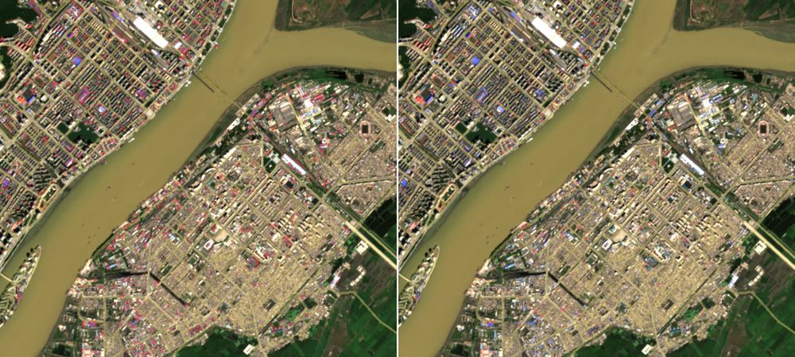
Contains modified Copernicus Sentinel data 2024 (Sentinel-2, 2024년 8월 27일 촬영) · 처리: 반재하 도로 자료 ⓒ OpenStreetMap contributors
일반적으로 북한에 관한 수치와 정보는 현지에서 직접 측정한 값이 아니라 인공위성이 포착한 흔적을 바탕으로 산출된 결과다. 이 작업을 위해 반재하는 공개 위성자료를 이용해 북한 내 13개 도시를 관측하고, 한국 연구기관의 방법론을 따라 경제 지표를 직접 산출해 보았다. 동시에 같은 관측값에 경제 지표가 아닌 다른 이름을 붙임으로써, 제한된 관측이 해석과 명명을 거쳐 북한에 관한 숫자와 지식으로 구성되는 방식을 드러낸다. 이를 통해 객관적 사실처럼 보이는 숫자와 지식 또한 관측과 해석, 명명에 의해 구성된 것임을 되묻고, 나아가 북한에 관한 우리의 지식과 판단이 만들어지는 과정 자체를 돌아보게 한다.
►반재하 Jaeha Ban
반재하는 시스템이 오작동하는 지점을 작업의 재료로 삼는다. 작업은 일상적 사물과 사건에 내재한 유통, 기술, 분단의 흔적을 발견하고 관찰하는 리서치를 동반한다. 유통과 기술이 만들어내는 동시적인 흐름과 한반도의 분단 체제가 만들어낸 비동시적인 조건을 교차시키는 퍼포먼스, 설치, 영상 작업을 해왔다. 시스템이 오작동하는 지점을 새로운 감각이 촉발되는 장으로 만들고자 한다.
11
김재민이
〈테크노엇박과 낙서〉
2026 · 단채널 비디오, ILDA 레이저 프로젝션, 축광 벽면, AR앱, 혼합 매체, 가변크기 협업 작가: 정다혜(그래픽, AR, 지미츄로스), 이현서(그래픽, 레이저)
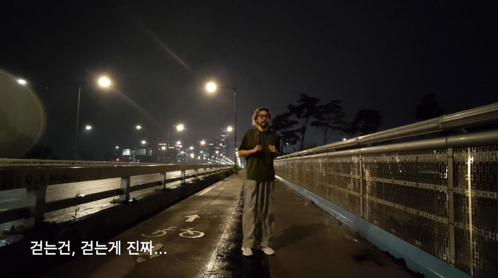
〈테크노엇박과 낙서〉는 도시 곳곳에 남겨진 사소한 흔적과 그 안에 스며 있는 삶의 궤적을 오늘날의 기술적 매체를 통해 탐색하는 작업이다. 작가는 서울 북부 거리에서 발견한 낙서 '김지미클릭'을 추적하는 프로젝트 '지미츄로스'의 활동을 출발점으로, 영등포의 거리 풍경과 하위문화의 흔적을 영상, 레이저, 증강현실(AR)로 재구성한다. 작업은 기 드보르(Guy Debord)의 '표류(Dérive)' 개념과 능동과 수동의 이분법을 넘어서는 중동태적 사유를 바탕으로 한다. 도시를 관찰하는 주체이면서 동시에 도시의 흐름에 이끌리는 존재라는 양가적 위치 속에서, 낙서와 거리에서 포착한 테크노 엇박 춤은 창작자의 동선을 형성하는 일종의 길잡이로 기능한다. 작가 눈에 포착된 영등포 특유의 문화적 기호인 '테크노 엇박'은 음악 장르를 넘어 도시가 만들어내는 삶의 리듬을 상징한다. 거리의 낙서와 몸짓은 AI 기반 이미지 처리와 레이저 드로잉을 거쳐 새로운 데이터의 흔적으로 변환되며, 전시장 안에서 다시 물질적 형상을 획득한다. 움직이는 레이저와 축광 벽면에 남는 잔상, 스마트폰을 통해 중첩되는 AR 이미지는 영등포의 밤을 전시장으로 호출한다. 사라질 운명의 낙서는 기술적 매핑을 통해 잠시 축적되고, 관람자는 도시의 하위문화와 기술적 환경이 교차하는 풍경 속에서 거대한 시스템 안을 살아가는 개인들의 저마다의 리듬과 궤적을 새롭게 바라보게 된다.
►김재민이 Gemini Kim
김재민이는 서울, 그 중에서도 수도의 일부 지역 중심 위주 사고 방식에 피해 의식을 가졌지만 누구보다 서울 중심에 살고 싶어하는 인천 출신 예술 창작자라고 스스로를 설명한다. 작가는 변두리라는 화두를 내세워 지역의 변화를 추적하는 프로젝트를 진행했고, 변두리 멘탈을 연구하는 대한소인협회를 만들어 활동중이다. 언제나 주변부의 이야기를 중심으로 끌어오고 싶어한다.
12
듀킴
〈Kissing Forever ∞ Kiss of Chaos ☆〉
2020 · 단채널 비디오, 56초 (반복재생)
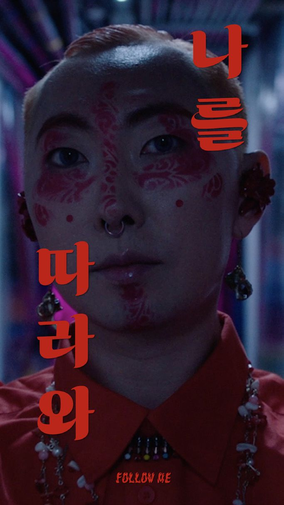
〈Kiss of Chaos ☆〉는 케이팝 뮤직비디오 형식을 빌려 퀴어와 젠더의 흐려지는 경계를 샤머니즘의 시각으로 탐구한다. 작가는 선과 악, 주체와 대상을 가르는 서구 종교의 이분법에 맞서, 서구인들이 '흑신앙'이라 폄훼했던 북아시아 무속의 주술적 수행을 경유해 그 구분을 흩뜨린다. 작가는 아이돌 자아 '호니허니듀'가 됨으로써 정상성 바깥에 놓인 실패자의 욕망을 드러내며, 끊임없이 분열하고 확장하는 카오스적 세계로 나아간다.
►듀킴 Dew Kim
듀킴은 종교와 퀴어성, 포스트휴먼적 정체성이 충돌하는 자리에서 신체를 탐구한다. 그는 몸을 고정된 형상이 아니라 믿음과 저항, 변형이 만나는 장소로 다루며, 취약성과 욕망, 그리고 스스로 선택하지 않은 역사를 몸이 어떻게 떠안는지를 묻는다. 조각, 설치, 퍼포먼스를 오가며 헌신과 규율, 갈망의 몸짓 속에서 권력이 어떻게 작동하는지를 살핀다. 샤먼 되기, 아이돌 되기와 같은 '되기'의 수행을 통해 대중문화의 미학과 의례적 상징을 엮어, 쾌락과 취약성이 맞닿는 연극적 공간을 만든다.
13
최선
〈조용한 말〉
2026 · 단채널 영상, 2분 4초
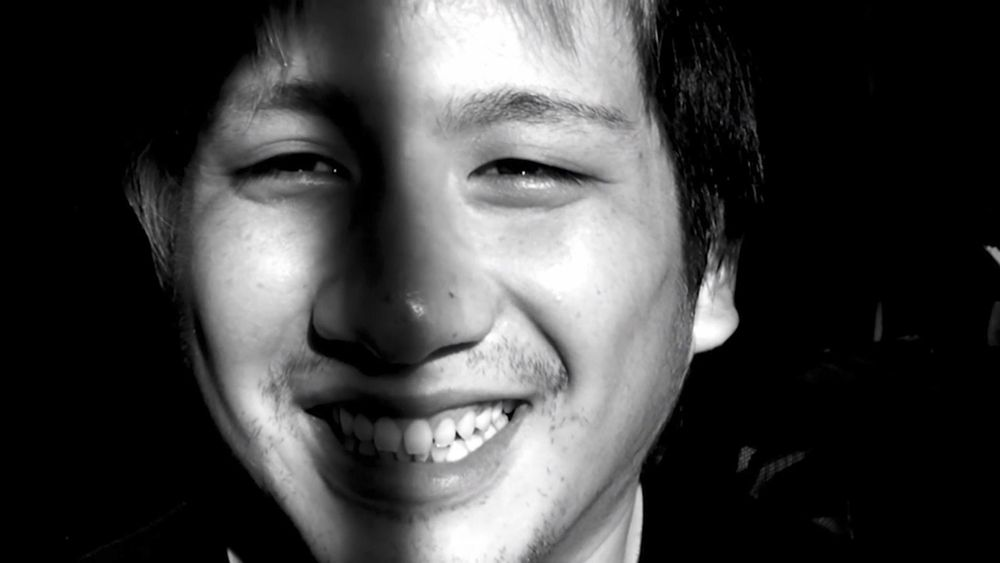
14년 전, 작가 최선이 일본 요코하마에서 만난 재일조선인 청년과의 짧은 만남은 이 작업의 출발점이 되었다. 작가는 한국어를 하지 못하는 청년에게 자신의 이름을 반복해 말해달라고 요청하고, 그 응답의 과정을 기록한 실험적 영상을 통해 이름이 개인을 지시하는 언어적 표지에 머물지 않고 역사와 정체성, 기억과 감정이 중첩되는 수행적 사건임을 탐구한다. 반복되는 호명 속에서 청년의 말의 속도와 억양은 점차 달라지고, 웃음과 눈물 사이를 오가는 미세한 감정의 흔들림이 드러난다. 이 짧은 영상은 '이름'과 '나' 사이에 존재하는 간극을 드러내며, 언어만으로는 환원될 수 없는 정체성의 층위를 사유하게 한다.
►최선 Sun Choi
최선은 자신이 살아가는 사회에서 발생한 사건의 물질적 흔적을 미술의 재료로 전환한다. 거리 위에 남겨진 침, 살처분되어 매립된 돼지 사체에서 스며 나온 기름, 쓰레기 침전 오수의 거품, 경찰의 시위 진압용 캡사이신 등 사회적 사건을 통과한 물질들을 작품의 재료로 사용하며, 인위적인 붓질을 최대한 배제한 '그리지 않은 그림'을 구현한다. 물질의 변용을 통해 사회적 현실을 예술적 의미로 전환하는 그의 작업은 평면 회화를 넘어 영상, 사운드, 공간 설치 등 다양한 매체를 가로지르며 확장되고 있다.